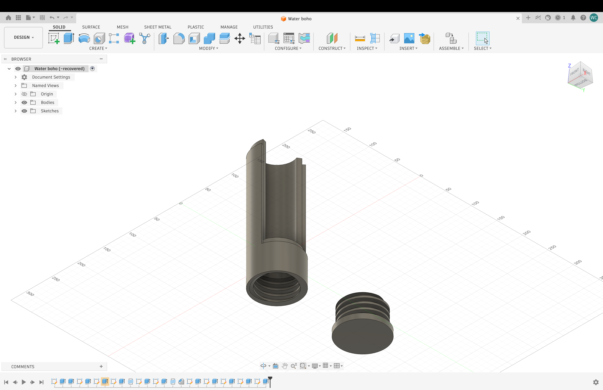
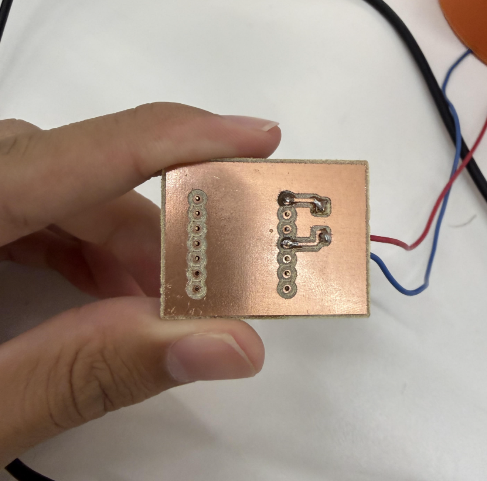
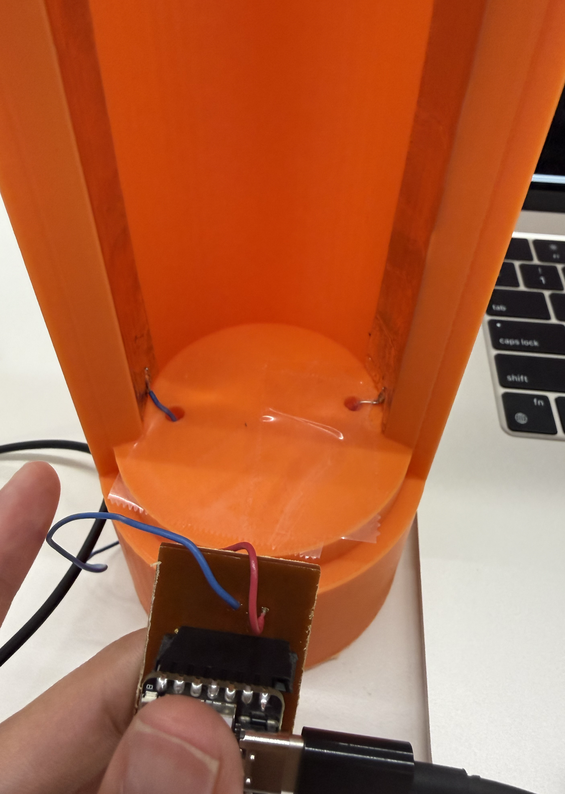
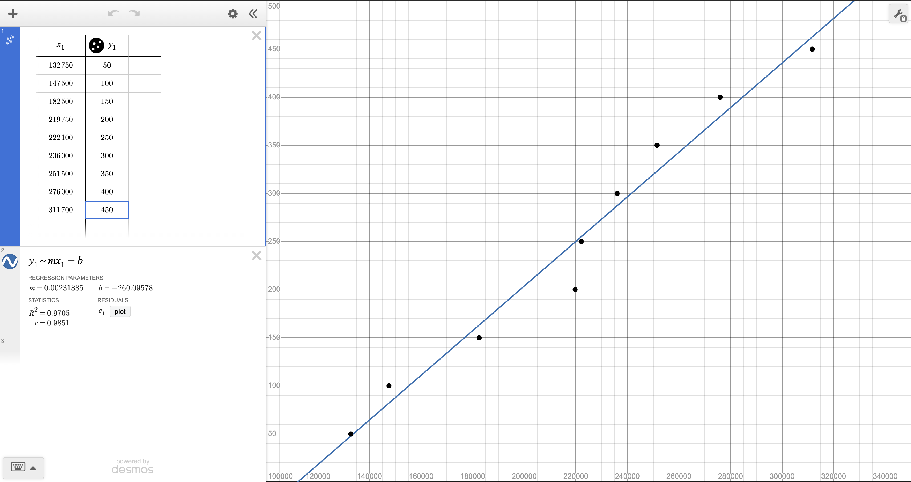

Week 7: Outputs
Document your minimum viable project either here or in the Final Project tab.
DrinkMore-Smart Water bottle attatchment
My device is a case for a water bottle that can track the amount of water you drink and sends reminders to drink in a set amount of time based on the last time you drank water.
Create a microcontroller program that integrates an input and output device, using the C++ class structure and avoiding the delay() function. Use the oscilliscope to measure the signals on one of the pins of your output device.
3D print


I 3D printed the case for the bottle as I needed to use threads in my design to create the enclosure in the base of my case to store the microcontroler and battery. My print consists of two parts the acutal case that can fit the waterbottle, I also created a lid that has threads on the outside cylinder with a hollow part on the inside to store the battery and microcontroler. I encountered my first problem in my first print is I printed the wrong size so threads. I reprinted the cap with the correct thread size, however there was still a lot of friction and is really hard to screw in and out.
I followed this youtube tutorial to create threads in fusion.
PCB

I have documented the PCB creation process of my MVP in the "Week 8: CNC" page of website.
Click Me! Link to PCB website page
Wiring

I connected the wires from my PCB to two pieces of copper tape using solder, the pieces of copper tape are attatched onto the side of my 3D printed case opposite from each other.
Calibration

I used the code below which I also used in the week 6 project that also involved capacitance. My results were pretty linear as the values for capacitance increased in equal intervals when I increased the amount of water inside the bottle by 50 ml. However, I encountered a problem as the next morning after I calibrated the capacitance the values became very different from the ones I got yesterday which ruined what progress I had on the code yesterday, I was also scared that this would happen again.
long result; //variable for the result of the tx_rx measurement.
int analog_pin = A0;
int tx_pin = D4;
int ledPin = D8;
int ledPin2 = D6;
int ledPin3 = D7;
void setup() {
pinMode(tx_pin, OUTPUT); //Pin 4 provides the voltage step
Serial.begin(9600);
pinMode(ledPin, OUTPUT);
pinMode(ledPin2, OUTPUT);
pinMode(ledPin3, OUTPUT);
}
void loop() {
result = tx_rx();
Serial.println(result);
if (result > 300000) {
digitalWrite(ledPin, HIGH);
digitalWrite(ledPin2, LOW);
digitalWrite(ledPin3, LOW);
} else if (result > 70000) {
digitalWrite(ledPin2, HIGH);
digitalWrite(ledPin, LOW);
digitalWrite(ledPin3, LOW);
} else {
digitalWrite(ledPin3, HIGH);
digitalWrite(ledPin, LOW);
digitalWrite(ledPin2, LOW);
}
}
long tx_rx() { // Function to execute rx_tx algorithm and return a value
// that depends on coupling of two electrodes.
// Value returned is a long integer.
int read_high;
int read_low;
int diff;
long int sum;
int N_samples = 100; // Number of samples to take. Larger number slows it down, but reduces scatter.
sum = 0;
for (int i = 0; i < N_samples; i++) {
digitalWrite(tx_pin, HIGH); // Step the voltage high on conductor 1.
read_high = analogRead(analog_pin); // Measure response of conductor 2.
delayMicroseconds(100); // Delay to reach steady state.
digitalWrite(tx_pin, LOW); // Step the voltage to zero on conductor 1.
read_low = analogRead(analog_pin); // Measure response of conductor 2.
diff = read_high - read_low; // desired answer is the difference between high and low.
sum += diff; // Sums up N_samples of these measurements.
}
return sum;
}